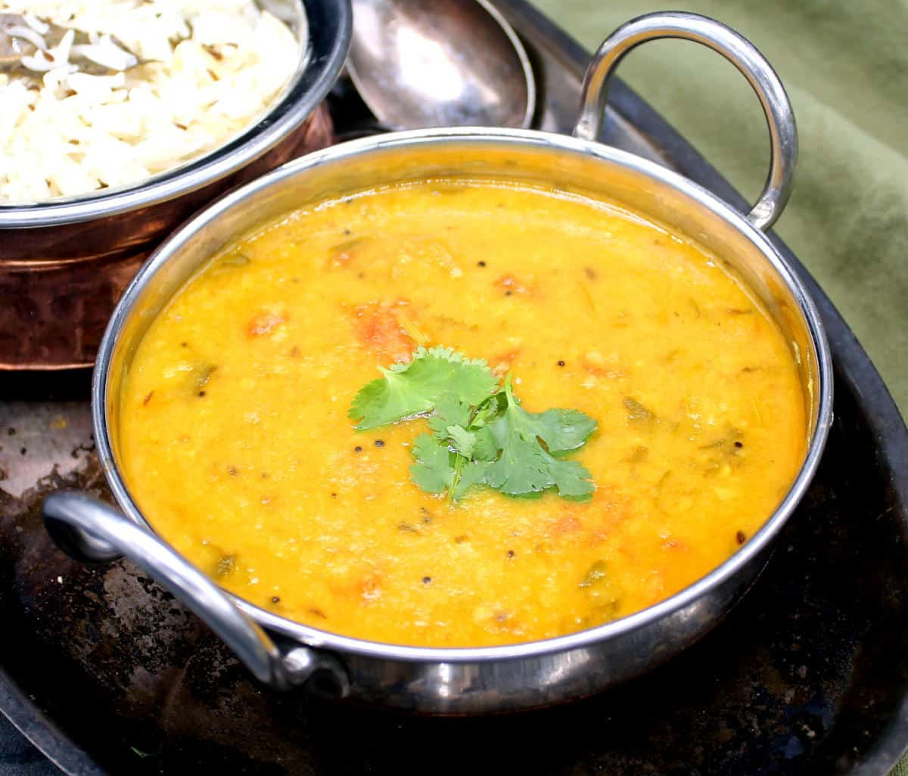

Home
Lentils with Cumin

Description
This dish is a staple in our family and is eaten every day with rice
or flat bread. This recipe is ayurvedic and satvic. Any type of lentils
can be used, but the quantity of water needed may vary.
Ingredients
- 6 cups cold water
- 1 teaspoon ground turmeric
- 2 teaspoons ground coriander
- 2 cups any lentils (red, green or yellow) washed and drained
- 1 1/2 teaspoons salt
- 1 tablespoon clarified butter (ghee)
- 1/2 teaspoon cumin seeds
- 1 pinch asafoetida (hing)
Steps
- In a heavy saucepan, bring the water to a boil.
- Add the spices, lentils, and salt.
- Cover, and cook over medium heat for 45 minutes, or until the
lentils are soft and can be mashed easily with a spoon.
- Remove from the heat.
- Heat the clarified butter in a small frying pan.
- Add the cumin seeds and sauté until golden brown.
- Add this mixture to the lentils.
- Optionally before serving, drizzle the lentils with lemon juice or top
with thin slices of ginger pickled in lemon to aid digestion.